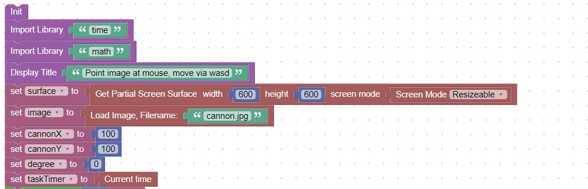
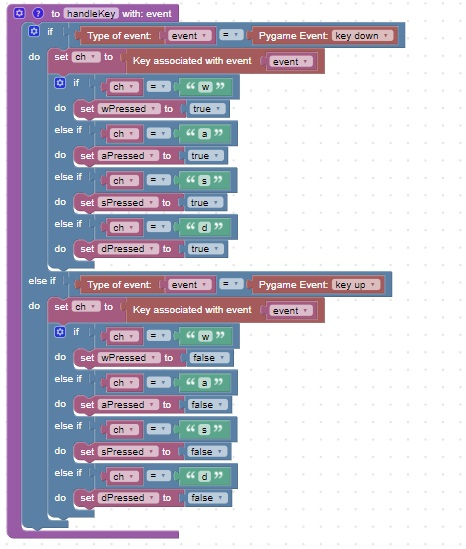
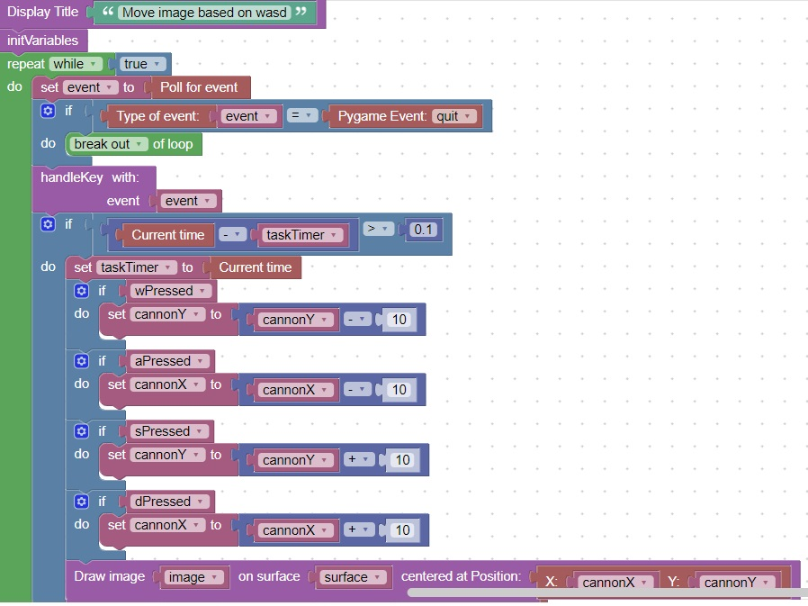

<h1>Move an image based on wasd keys</h1>
<h2>New Concepts</h2>
   <table border="2px solid">
     <tr><th bgcolor="blue">Concept</th><th bgcolor="blue">Description</th></tr>
     <tr><td><center>1</center></td><td>You can move an image based on the wasd keys.</td></tr>
   </table> 
<h2>Code</h2>
This code will initialize the wasdMove example<br>
<br>
This code will handle the pygame.KEYUP and pygame.KEYDOWN events and determine the key press<br>
<br>
This code will handle the key press and move the image accordingly<br>
<br>

<hr>
<center></center>